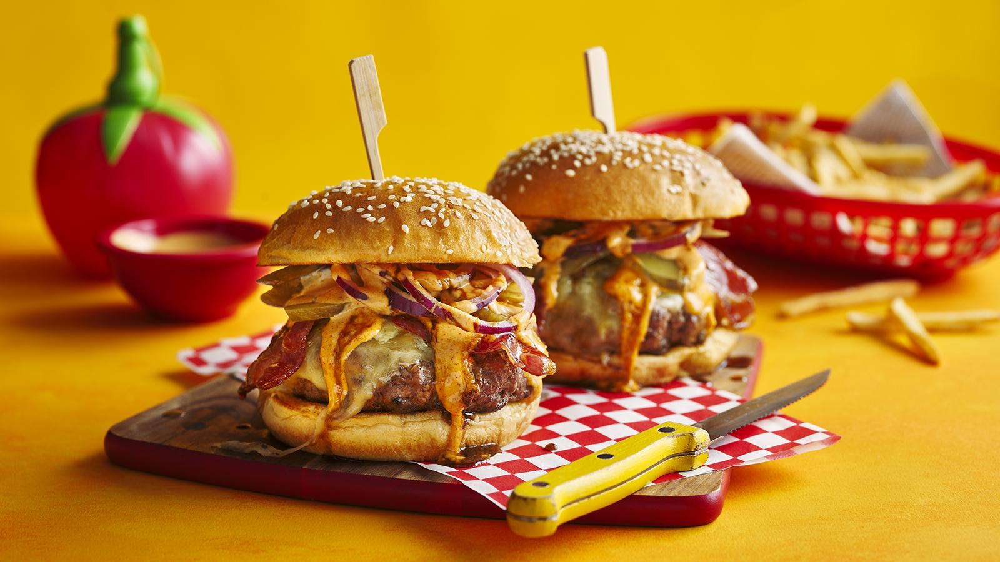

Burger

Introduction
The black and blue in these homemade steak burgers comes from blue cheese and the black treacle-caramelised bacon. Served in a seeded brioche bun with red onion, pickles and burger sauce, it has a unique, delicate balance of sweet and salty flavours.
Ingredients
- 200g/7oz deboned rib steak, cut into chunks
- 200g/7oz deboned short rib steak, cut into chunks
- salt and freshly ground black pepper
- 2 slices mild cheddar
- 2 seeded brioche buns, split and toasted
- 2 dill pickles, sliced lengthways
Steps
- Mince the rib steak and short rib steak using a mincer (or place in a food processor and pulse together). Transfer to a bowl and season with salt and pepper. Shape into two burger patties, pressing down a little to flatten. Put on a plate, cover and transfer to the fridge for at least 1 hour to firm up.
- Heat a little oil over a medium-high heat in a non-stick frying pan. Add the bacon slices and cook for a minute or two on either side until starting to crisp. Add the sugar, maple syrup and treacle to the pan, reduce the heat and allow to caramelise, turning the bacon slices in the syrup to coat for 1–2 minutes. Remove from the heat and reserve any syrup leftover in the pan.
- To cook the burgers, heat a griddle pan over a medium-high heat. Once hot, brush with a little oil and add the burgers. Cook for around 5–6 minutes on each side, or until cooked through.
- Top each burger with a slice of cheddar, some blue cheese and 2 slices of bacon. Add a little water to the griddle pan and cover with a closh or lid. Cook for 1–2 minutes until the cheese has melted.
- To assemble, arrange the burgers and bacon on the bottom halves of the buns. Top with the sliced pickle and onion. Drizzle with the dope sauce and any reserved syrup. Top with other halves of the buns and serve with fries.